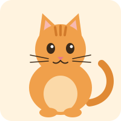

סיפור שבו אתם בוחרים מה החתולה תאכל

לחצו כדי לשמוע את מיצי:
בבוקר שקט אחד, בדירה קטנה בקומה השלישית, גרה חתולה כתומה בשם מיצי. היו לה פסים על המצח, שפם ארוך, ובעיקר: תיאבון ענק.
מיצי אהבה לישון על הספה, לרדוף אחרי זבובים ולהסתכל מהחלון על הציפורים. אבל יותר מכל דבר אחר בעולם, היא אהבה לאכול. וכל פעם היא רצתה לאכול משהו אחר.
באותו בוקר מיצי פקחה עין אחת, ואחר כך עין שנייה. השמש כבר חיממה את הספה, הבית היה שקט, ופתאום נשמע קול מוזר:
גררררררר...
זה לא היה רעם, וזה לא היה המקרר. זו הייתה הבטן של מיצי.
המשך לקרוא ←